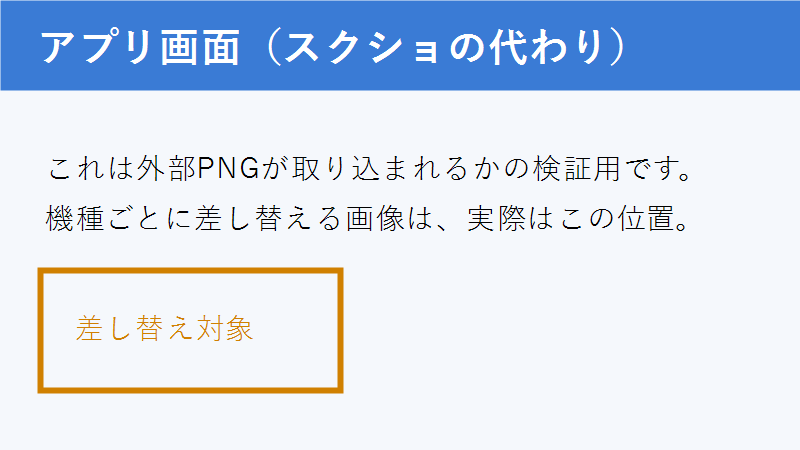

B：HTMLの箱＋SVGの矢印
はかる係
送るだけ
きめる係
判断する
うごく係
受けて動くだけ
箱がHTML要素のまま、矢印だけ図形になるかを見る。
C：外部PNG（スクショ相当）

実際の教材ではこの位置に機種ごとのスクショが入る。asset_id が振られるかも確認する。
D：ラベルの書き方で複製が起きるか
div のラベル
上は div。下は h3。前回は span で複製が起きた。
h3 のラベル
このページにしか無いはずのラベルが、他ページに現れないかを確認する。